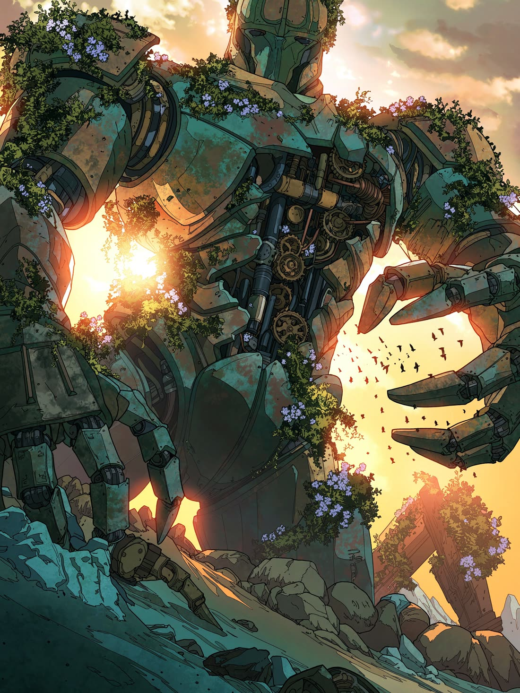

布局模式 18 · 全屏版面
全屏英雄区布局 FULL-SCREEN HERO
一整屏的画面先说话，文字只是画面上的标注。
全屏英雄区把首屏让给一张图或一段视频：视口高度 100vh，背景铺满，上面盖一层 30% 到 50% 的黑色遮罩保证文字可读。
它的排版是反过来的——标题极大（56 到 96px）、副标题短、只放两个行动按钮，其余信息全部下移。按钮用反色（白底黑字）才能在深色遮罩上跳出。视觉细节只有一个：CTA 的「重力浮起」，hover 时上浮 4px 并让阴影爆发到 28px，像被光托起来。
布局实演
下面这一屏就是完整的第一屏：透明导航、满屏画面、40% 遮罩、96px 标题、一行副标题、两个按钮，首屏底部只留三张磨砂特性卡。把鼠标放到主按钮上——它会上浮 4px，阴影同时爆发。

把一整屏
交给画面
文字只是画面上的标注。
全屏媒体
图片或视频铺满，object-fit: cover。
0.4 视差
滚动时背景慢半拍，最多 0.5。
反色按钮
白底黑字，才跳得出遮罩。
配色方案
- White
#ffffff - Black
#000000 - Coral
#ff6b6b - Cyan
#4ecdc4 - Yellow
#ffe66d - Indigo
#6c5ce7
颜色
这一套的颜色全在画面上，界面本身只有黑白两层：白是唯一能保证在深色遮罩上可读的颜色，黑是遮罩与按钮文字。珊瑚红是次要强调与徽标，青色给链接与次级按钮的悬停，黄色只用在高亮与数字上。
- White主按钮填充与标题文字。在全屏画面之上，白是唯一能保证可读的色。
#ffffff--color-white - Black遮罩与按钮文字。遮罩用 30% 到 50% 不透明度铺在图上。
#000000--color-black - Coral次要强调与徽标，用于需要从画面中跳出的信息。
#ff6b6b--color-coral - Cyan链接与次级按钮的悬停色，与暖色画面形成对位。
#4ecdc4--color-cyan - Yellow高亮与数字，只用在小面积标注上。
#ffe66d--color-yellow - Indigo品牌色，用于 logo 与一处强调。不与珊瑚、黄同屏面积相当。
#6c5ce7--color-indigo
表面层级：0 Full-bleed media（100vh 画面），1 Veil rgba(0,0,0,0.40)，2 Frosted panel rgba(255,255,255,0.10)。阴影三级：CTA 静息 0 4px 14px rgba(0,0,0,0.30)、CTA hover 0 8px 28px rgba(0,0,0,0.50)、卡片 hover 0 16px 40px rgba(0,0,0,0.50)。
字体
全站唯一字体 Inter。首屏标题靠 96px 与 -0.035em 字距制造压迫感，其余字级迅速回落。
把一整屏交给画面
| 角色 | 字重 | 字号 | 行高 | 字距 | 令牌 |
|---|---|---|---|---|---|
| display | 700 | 96px | 0.98 | -0.035em | --text-display |
| heading-lg | 700 | 64px | 1.02 | -0.03em | --text-heading-lg |
| heading | 600 | 40px | 1.1 | -0.02em | --text-heading |
| subheading | 400 | 24px | 1.3 | — | --text-subheading |
| body-lg | 400 | 18px | 1.6 | — | --text-body-lg |
| body | 400 | 15px | 1.6 | — | --text-body |
| label | 600 | 13px | 1.4 | 0.08em | --text-label |
间距与版面
基础单位 8px，密度 airy。首屏 100vh，内容垂直居中或偏下 60% 处，最大宽度 1280px、左右内边距 32px。标题最多两行，副标题一行，两个按钮横排。首屏内不放超过三个信息块。往下每个区块至少 160px 间距。
8162432486496128
| 元素 | 值 |
|---|---|
| 卡片圆角 | 16px |
| 按钮圆角 | 999px |
| 输入框圆角 | 12px |
| 媒体圆角 | 0 |
| 卡片内边距 | 32px |
| 元素间距 | 24px |
| 首屏高度 | 100vh |
| 页面网格上限 | 1280px |
组件
Hero CTA
首屏主行动按钮。白底、黑字、999px 全圆角、无描边，字级 18px、字重 600、padding 16px 32px，阴影 0 4px 14px 黑 30%。hover 时填充降到 95%、上浮 4px、阴影爆发到 0 8px 28px 黑 50%；按下缩放 0.98、位移归零、阴影回到 8px。焦点环用白色 80% 并带黑色 offset。过渡 200ms ease-out。
Frosted Feature Card
首屏内的特性卡与数据块。白 10% 填充、8px 模糊、1px 白 20% 描边、16px 圆角、内边距 32px。图标块 48px 见方、白 20% 底、12px 圆角。hover 时填充升到 15%、描边到 30%、上浮 8px、阴影 0 16px 40px 黑 50%，图标放大 1.1。过渡 300ms ease-out。
Transparent Nav
首屏顶部导航。完全透明，无边框无阴影。高 80px、水平内边距 32px，字标与链接均为白色，链接 13px/500、字距 0.08em、间距 32px，hover 转白 70%。滚动超过一屏后切换到实色底并加 1px 白 10% 下边框。
Hero Media
首屏背景图或视频。100vh 高、铺满宽度、object-fit: cover、直角。上覆一层 40% 黑遮罩（顶部可深到 55% 保证导航可读）。允许 0.3 到 0.5 的视差速度。视频必须静音、循环、poster 必填。
可为与不为
可为
- 首屏必须占满一个视口
- 遮罩 40% 起，保证文字可读
- 按钮用反色（白底黑字）
- 标题最多两行，副标题一行
- CTA hover 上浮并爆发阴影
- 视差控制在 0.3 到 0.5
不为
- 不要在首屏放超过两个按钮
- 不要把正文塞进首屏
- 不要在图片角落放关键信息
- 不要用低于 30% 的遮罩
- 不要用自动播放带声音的视频
- 不要让视差超过 0.6
图像
全屏摄影或视频是这套布局的全部内容：风景、产品、现场。图片必须有明确的明暗区域来安放文字，四角不要有重要信息。不使用插画与图案背景。
把这个效果带走
一份 Markdown 文档说明这套布局的首屏规则、遮罩强度、字级与按钮构造。复制后可直接交给编程助手。
复现这套布局时，100vh 首屏与 40% 遮罩必须原样保留；首屏最多两个按钮，CTA 的浮起与阴影爆发是这套风格唯一的视觉细节。